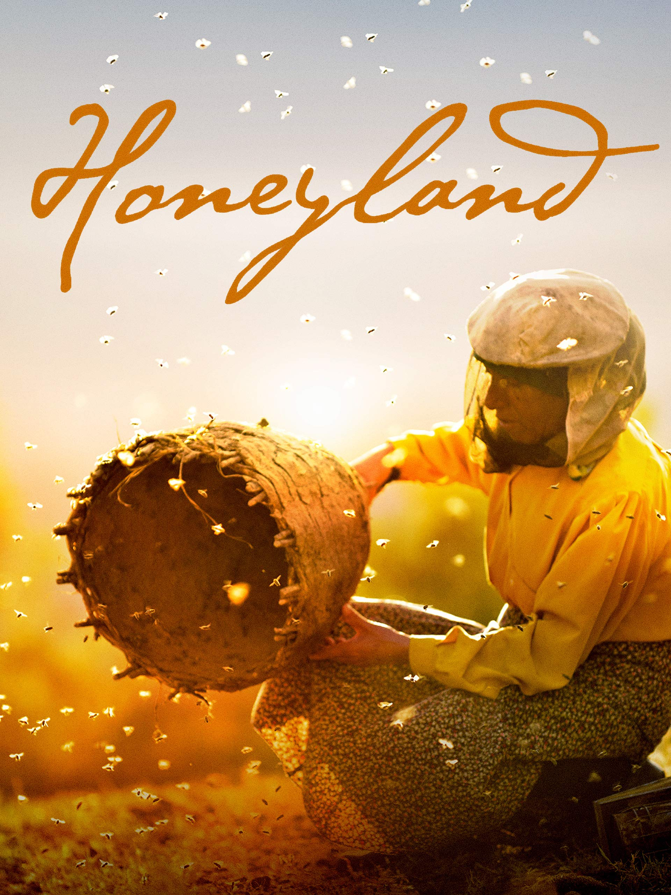
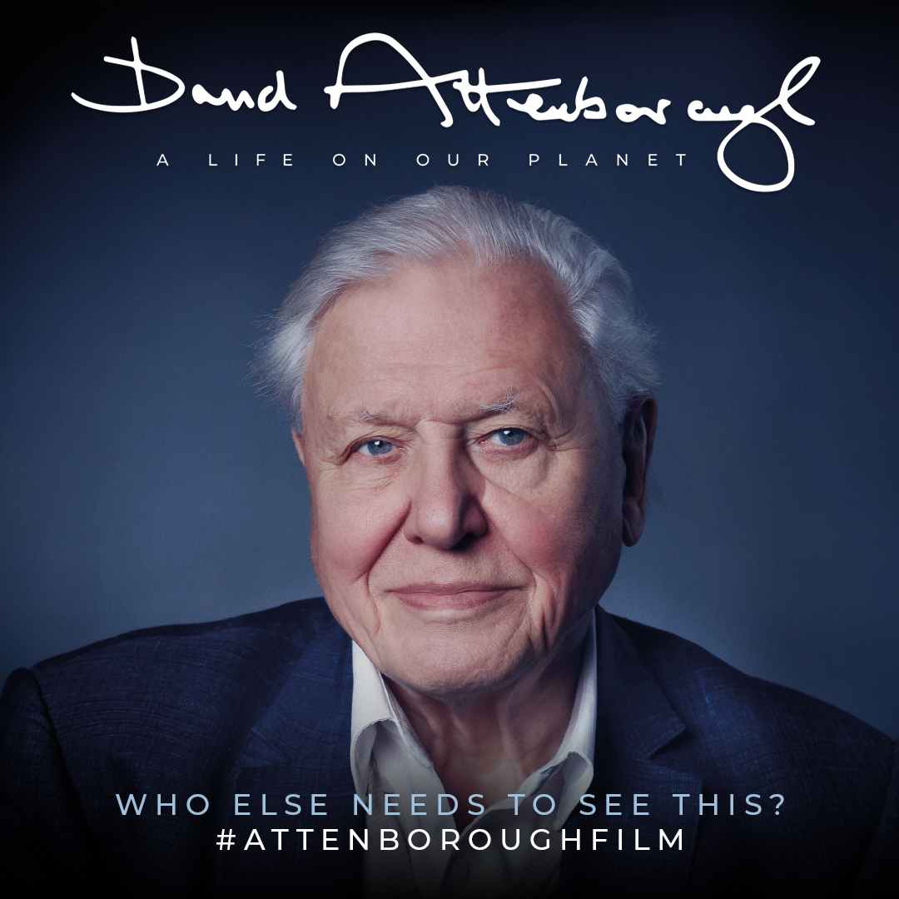
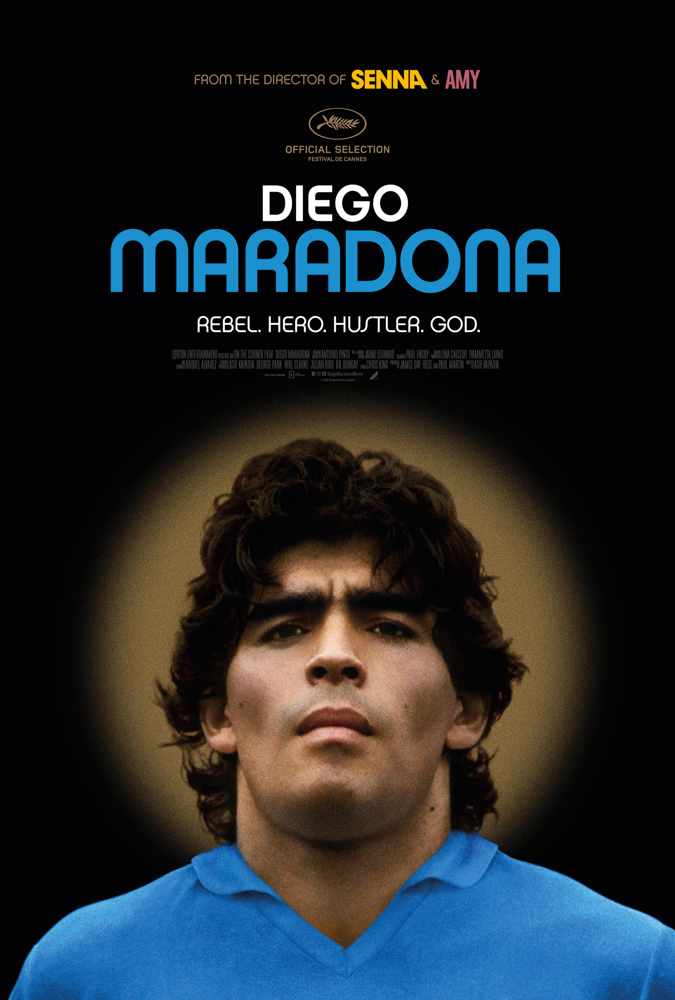

Honeyland
1h 29m
TR (TIT CZ)
The last female bee-hunter in Europe must save the bees and return the natural balance in Honeyland, when a family of nomadic beekeepers invade her land and threaten her livelihood.

David Attenborough: A Life on Our Planet
1h 23m
EN (TIT CZ)
One man has seen more of the natural world than any other. This unique feature documentary is his witness statement.

Diego Maradona
2h 10m
EN (TIT CZ)
Constructed from over 500 hours of never-before-seen footage, this documentary centers on the career of celebrated football player Diego Maradona, who played for S.S.C. Napoli in the 1980s.